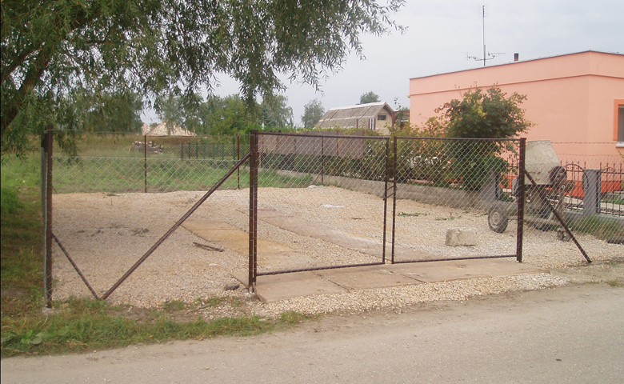

Prvý sklad vedľa rodinného domu
Začiatok nebol veľký, ale bol konkrétny. Predajňa využívala časť susedného pozemku a garáž pri rodinnom dome.
Tento záber otvára historickú galériu prvého webu a zachytáva prvý skladový dvor, z ktorého ROLUMI vyrástlo.
